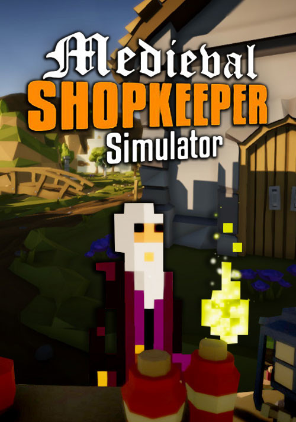

Medieval Shopkeeper Simulator
Medieval Shopkeeper Simulator
Details
|  | |
| Spielzeit | Nicht gespielt |
| Letzte Aktivität | Nie |
| Hinzugefügt | 25.06.2022 13:12:26 |
| Modifiziert | 10.11.2022 12:35:19 |
| Fertigstellungsstatus | Not Played |
| Bibliothek | Steam |
| Quelle | Steam |
| Plattform | PC (Windows) |
| Veröffentlichungsdatum | 11.05.2018 |
| Community Bewertungen | 61 |
| Kritiker Punkte | |
| Benutzerwertung | |
| Genre | Adventure Indie Simulation 🐎 RPG |
| Entwickler | David Moralejo Sánchez |
| Verleger | GrabTheGames |
| Eigenschaft | Single Player Stats |
| Links | Communityhub Diskussionen Guides Neuigkeiten Shopseite PCGamingWiki |
| Tag | |
Beschreibung
"Hello, the developer speaking. As many of you probably noticed there was no updates in a while... Let me explain: the problem was with my lack of knowledge and my inexperience in this world of game development. This was my very first Steam game and 1 year ago, my pc started crashing and I got several blue screens.. My project got corrupted badly, to the point its impossible to improve or finish. So I came to the decision to make the game completely free. The game is playable however not finished and there are bugs in it. This project has helped me a lot to improve my work and as a person, I have learned a lot and many thanks to the players who loved this project so much."
Medieval Shopkeeper Simulator is a medieval management, exploration and adventure game currently under development by Breakfast Studio.

Create, manage and expand your merchant empire, explore the borders of the world and properly manage your stores to become the most important trader in the kingdom.
Manage your stores, organize your workers, deliver orders, exchange and create unique items, unlock new skills and advantages, hire warriors for adventures, explore the world, resist global events like a plague or a war, plan your financial strategy supporting or confronting the crown and the church, alter the economy of the kingdom and its laws and face consequences of your decisions.
Depending on the king or queen that governs, there will be laws that will suit you more or less depending on your way of playing. The world of MSS reacts to every decision and even prices in stores, punishing mistakes with your reputation. Be careful and make wise decisions, visit the seer to reveal future events and prepare yourself to them.
KNOWN ISSUES:
There are some problems you might experience in the Alpha version of the game:
If the essential game mechanics is attractive and you want to give your support to Medieval Shopkeeper Simulator while you are in early access, we would love to have you. Otherwise, we recommend waiting until MSS exceeds the alpha stage when the game is more stable, and the game mechanics are more developed. I am committed to converting Medieval Shopkeeper Simulator into the best possible game, and your help during this early phase of development is crucial for us to achieve our goal.
If it intrigues you to know where we will take Medieval Shopkeeper Simulator, consult our roadmap and the development vlogs that I publish several times per month.
Medieval Shopkeeper Simulator is a medieval management, exploration and adventure game currently under development by Breakfast Studio.
Create, manage and expand your merchant empire, explore the borders of the world and properly manage your stores to become the most important trader in the kingdom.
Manage your stores, organize your workers, deliver orders, exchange and create unique items, unlock new skills and advantages, hire warriors for adventures, explore the world, resist global events like a plague or a war, plan your financial strategy supporting or confronting the crown and the church, alter the economy of the kingdom and its laws and face consequences of your decisions.
Depending on the king or queen that governs, there will be laws that will suit you more or less depending on your way of playing. The world of MSS reacts to every decision and even prices in stores, punishing mistakes with your reputation. Be careful and make wise decisions, visit the seer to reveal future events and prepare yourself to them.
KNOWN ISSUES:
There are some problems you might experience in the Alpha version of the game:
- bugs
- freezing
- loss of saved games
If the essential game mechanics is attractive and you want to give your support to Medieval Shopkeeper Simulator while you are in early access, we would love to have you. Otherwise, we recommend waiting until MSS exceeds the alpha stage when the game is more stable, and the game mechanics are more developed. I am committed to converting Medieval Shopkeeper Simulator into the best possible game, and your help during this early phase of development is crucial for us to achieve our goal.
If it intrigues you to know where we will take Medieval Shopkeeper Simulator, consult our roadmap and the development vlogs that I publish several times per month.